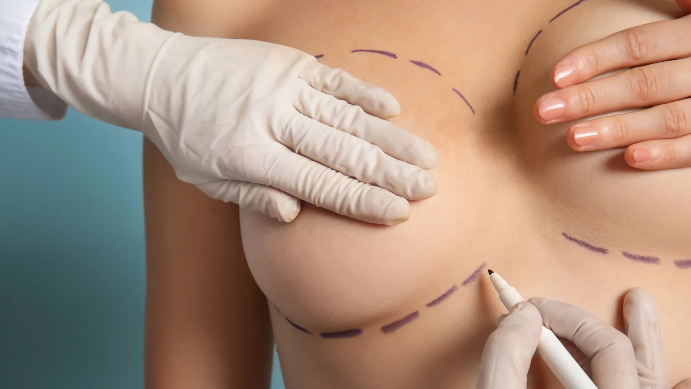
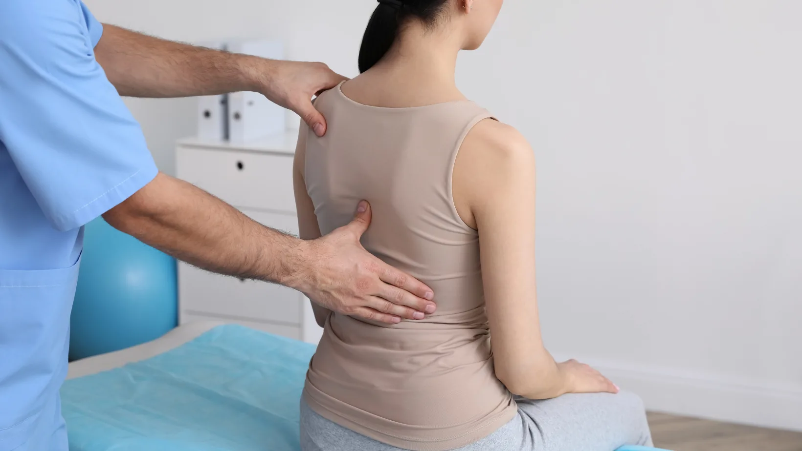
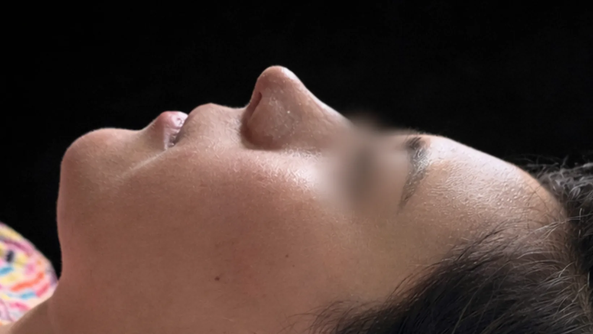
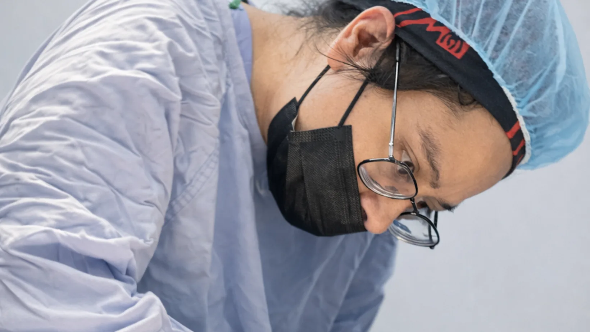
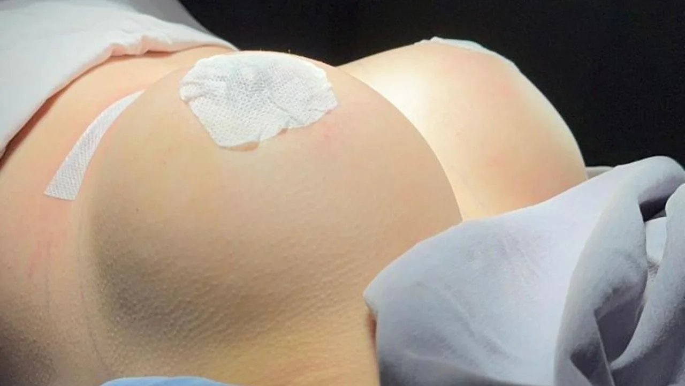
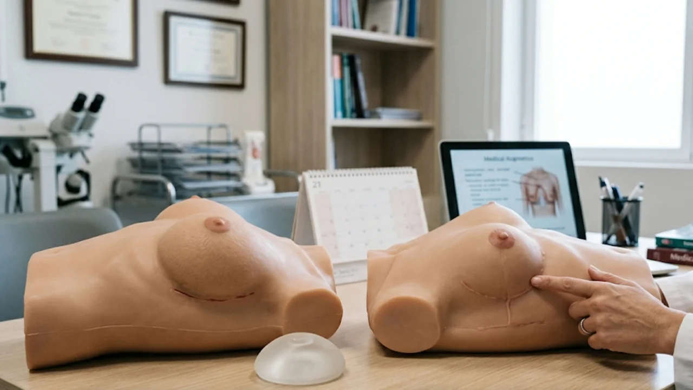
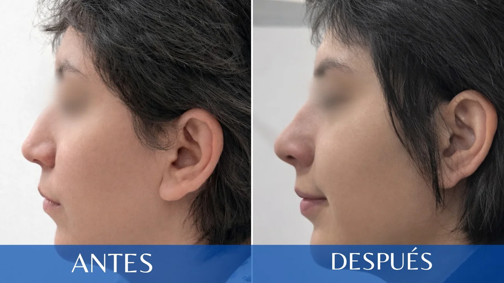
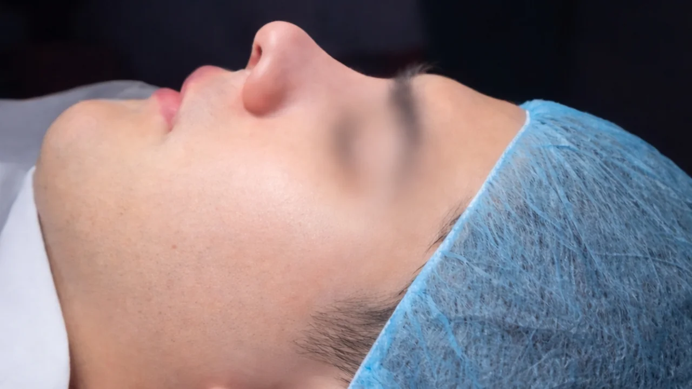
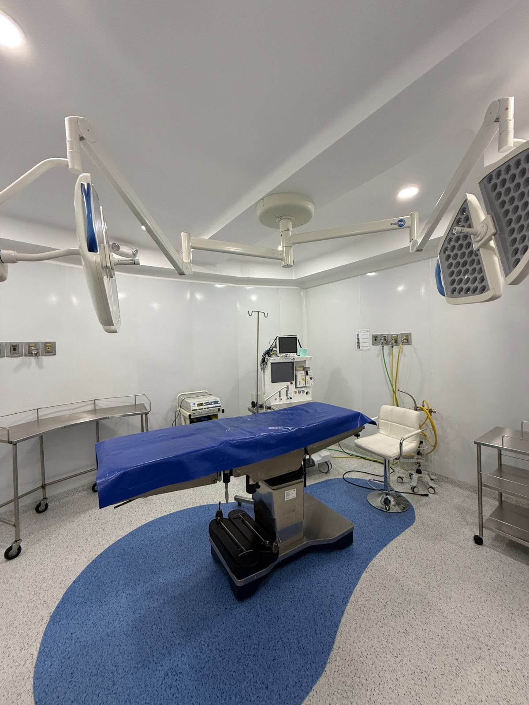

Blog MIT Medical Tower
Artículos, guías y notas editoriales sobre salud, especialidades médicas y procedimientos. Información confiable para tomar mejores decisiones.

Mommy Makeover: Beneficios de Recuperar la Armonía de tu Cuerpo Después del Embarazo
Combina abdominoplastia, liposucción, mamoplastia y mastopexia para mejorar las zonas del cuerpo que cambiaron tras el embarazo y la lactancia. Resultados personalizados.
Leer artículoTu Corazón Puede Estar Enviándote Señales: No las Ignores
Las enfermedades cardiovasculares pueden prevenirse con un diagnóstico oportuno. Conoce los síntomas, factores de riesgo y cuándo acudir al cardiólogo.
Leer artículo
¿Tienes un Hombro Más Alto que el Otro? Podría Ser Escoliosis
La escoliosis provoca una curvatura anormal de la columna. Conoce los síntomas, cómo se diagnostica y cuándo requiere tratamiento. Un diagnóstico temprano es clave.
Leer artículo¿Qué es la Aletomía? Todo lo que Debes Saber Sobre Este Procedimiento Estético Nasal
La aletomía modifica el tamaño o ancho de las alas nasales para lograr una nariz más proporcionada. Conoce cuándo se recomienda, recuperación y resultados permanentes.
Leer artículo
Rinoplastia: Cuidados Después de la Cirugía para una Recuperación Exitosa
El buen resultado no termina en el quirófano. Descansar con la cabeza elevada, evitar golpes y ejercicio intenso, seguir las indicaciones y tener paciencia: claves para una buena cicatrización.
Leer artículo
¿Tu Cirujano Está Certificado? Lo que Debes Verificar Antes de una Cirugía Estética
No elijas solo por el costo o las redes sociales. Certificación vigente, experiencia, una consulta honesta y un quirófano seguro: lo que debes verificar antes de operarte.
Leer artículoImplantes Mamarios y Maternidad: 5 Mitos que Debes Dejar Atrás
¿Los implantes mamarios afectan la lactancia? Derribamos 5 mitos sobre implantes, embarazo y lactancia con información basada en evidencia médica.
Leer artículoEstudios de Laboratorio de 6 o 14 Elementos: Prevención, Diagnóstico y Confianza Médica
Detectan anemia, infecciones, desbalances metabólicos y posibles afectaciones de hígado o riñones antes de que aparezcan síntomas. La base de un control médico responsable.
Leer artículo
Implantes Mamarios: Seguridad y Excelencia Médica
La decisión de aumentar tus mamas es importante. Conoce por qué nuestros cirujanos certificados, tecnología de vanguardia y atención personalizada hacen la diferencia.
Leer artículo
Más allá de un cambio: la ciencia de transformar tu silueta
La mamoplastia es mucho más que cambiar de talla: es ingeniería corporal que restaura armonía y devuelve comodidad. Descubre la ciencia detrás del procedimiento.
Leer artículo
Rinoplastia Ultrasónica: la evolución hacia la precisión absoluta
Adiós a cinceles y martillos. La rinoplastia ultrasónica esculpe el hueso con vibraciones piezoeléctricas: menos moretones, recuperación más rápida y mayor precisión.
Leer artículo
El tabú de la rinoplastia en hombres: redefiniendo la masculinidad
La rinoplastia masculina busca potenciar el carácter, no eliminarlo. Procedimiento moderno que preserva identidad y mejora función respiratoria.
Leer artículo
Rinoplastia: más allá de la estética, una decisión que debe tomarse con información y confianza
La rinoplastia es una de las cirugías faciales más complejas y personalizadas. Conoce qué implica, quién es candidato y cómo es la recuperación.
Leer artículo